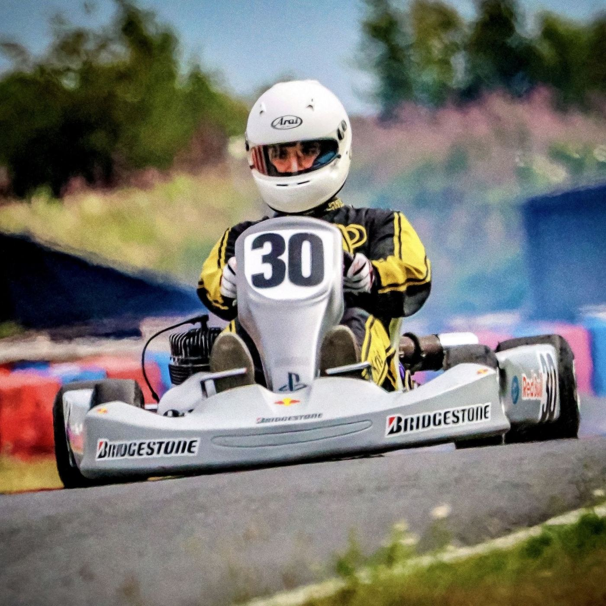
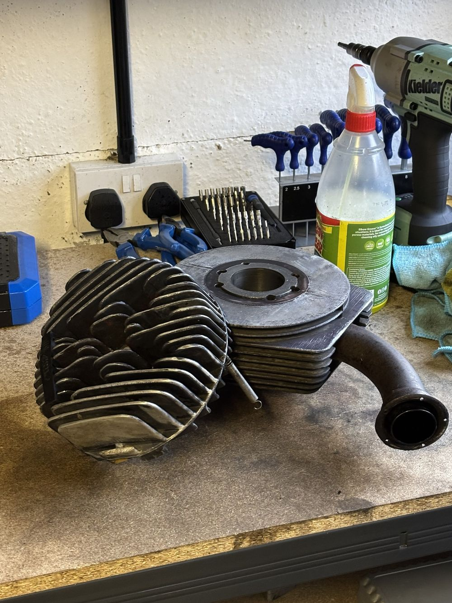
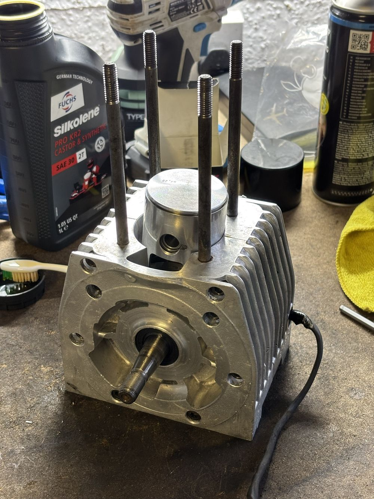

Rebuilding a 2001 TKM kart
A full chassis and engine rebuild in my garage, tested on track, with the aim of racing after university.
- Chassis
- TKM Shark, 2001
- Engine
- BT82 115cc two-stroke
- Status
- Rebuilt and track-tested
- Next
- Racing after university

Why a kart
Restoring, maintaining and racing my own kart gives me hands-on experience with an engine and chassis. Keeping it running, in the garage and trackside, is a constant exercise in logical problem solving and making decisions quickly.
Chassis
I stripped the chassis bare, cleaned and protected it, then reassembled it with new or refurbished parts.
- Every bearing replaced
- Two new rear axles: one for wet conditions, one for dry
- A quick front-end setup. Most of the geometry on karts of this era is fixed by TKM homologation.
Engine
I replaced the bearings, piston and gaskets to improve performance and longevity. I also rebuilt the carburettor and cleaned it ultrasonically, which clears dirt from fine internal channels that a brush or aerosol can't reach. It now gets stripped and dried after every day of running.


On track
After a successful test start, the kart ran at Clay Pigeon Raceway. That one day taught me how to set the carburettor, gave me a baseline for tyre pressures, and showed me the basics of running a kart at the track.
My friend Harrison, who is restoring his own TKM, helped with the first start-up. We're planning practice days together.